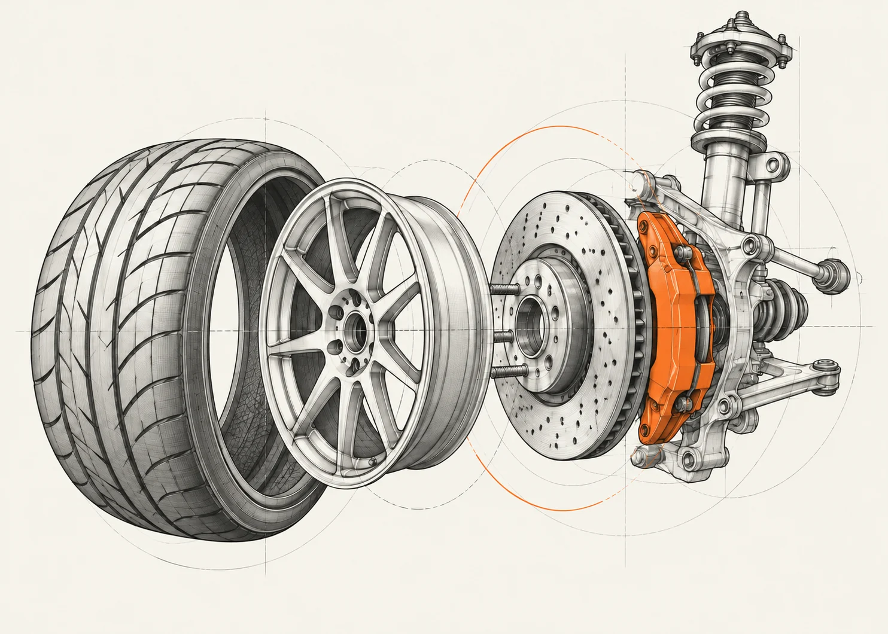

Diagnostyka
Sprawdzamy przyczynę usterki, gdy samochód zachowuje się inaczej niż zwykle.
Coś stuka, świeci się kontrolka albo czas na przegląd? Opisz, co dzieje się z autem. Sprawdzimy je i omówimy zakres oraz koszt prac, zanim zdecydujesz o naprawie.
Sprawdźmy Twoje auto ↗
Najpierw poznajemy problem.
Potem ustalamy rozwiązanie.
Od bieżącej obsługi po usterkę,
którą trzeba najpierw zrozumieć.
Sprawdzamy przyczynę usterki, gdy samochód zachowuje się inaczej niż zwykle.
Kontrola i naprawa elementów odpowiadających za prowadzenie oraz hamowanie.
Obsługa okresowa dopasowana do samochodu i jego przebiegu.
Oceniamy problem i ustalamy, jaki zakres prac jest potrzebny.
Kontrola działania i serwis układu, który odpowiada za komfort w aucie.
Wymiana, wyważanie i sprawdzenie stanu ogumienia.
Każdy kolejny krok
zaczyna się od informacji.
Pytamy o objawy, model samochodu i dogodny termin przyjazdu.
Ustalamy przyczynę problemu i wyjaśniamy, co wymaga naprawy.
Omawiamy proponowane prace. Dodatkowy zakres? Najpierw ponowny kontakt.
Przy odbiorze dowiesz się, co zrobiono i na co zwrócić uwagę podczas dalszej jazdy.
Koszt zależy od usterki, zakresu prac i dobranych części. Osobno ustalamy koszt sprawdzenia auta i proponowanej naprawy. Dodatkowe prace wymagają ponownej rozmowy o zakresie i koszcie.
Opisz, kiedy pojawia się objaw i co ostatnio zmieniło się w zachowaniu auta. Nie musisz znać nazwy usterki.
Zobacz, z czym przyjechać ↗Oto co warto wiedzieć,
zanim zostawisz samochód.
Markę, model i rocznik auta. Opisz objawy, kiedy się pojawiają i czy coś ostatnio się zmieniło. Jeśli znasz przebieg lub historię ostatnich napraw, też o nich wspomnij.
Zakres i koszt sprawdzenia auta ustalamy przed jego rozpoczęciem. To osobne ustalenie od kosztu samej naprawy.
Dodatkowy zakres wymaga ponownego kontaktu i uzgodnienia. Wyjaśniamy, co zauważyliśmy, jakie prace proponujemy i jak wpływa to na koszt.
Wyjaśnimy, jakie prace zostały wykonane i czego dotyczyły. Omówimy też, na co zwrócić uwagę w dalszej eksploatacji.
Podaj model samochodu i krótko opisz problem. Rocznik lub wersja silnika pomogą w pierwszej rozmowie.
To formularz demonstracyjny.
Nic nie wysyła i nie rezerwuje wizyty. Możesz sprawdzić, jak działa — bez podawania prawdziwych danych.